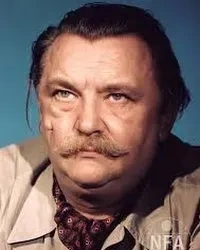
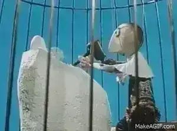

Vol.17 / Master of Puppet Poetry
語らぬ唇、震える陰影：
イジー・トルンカの静かなる革命
2026.03.12 UP


◎ 作者経歴：人形劇の国から来た魔術師
1912年チェコスロバキア生まれ。人形劇の伝統が息づく環境で育ち、舞台美術家、イラストレーターとしてキャリアを開始。1945年、アニメーションスタジオ「プラハのトリック兄弟（Bratři v triku）」を設立しました。彼は、人形の「口」を動かさないことで、観客に内面を想像させるという、アニメーションにおける「引き算の美学」を確立しました。
◎ 代表作紹介：木製パペットの交響曲
皇帝のうぐいす (1948)
アンデルセン童話をベースに、豪華絢爛なセットと「孤独な皇帝」を対比。人形が持つ気品を最大限に引き出した初期の名作。
真夏の夜の夢 (1959)
シェイクスピアの戯曲を原作とした、トルンカ最後の長編作品。シネマスコープ画面いっぱいに広がる幻想的な森と、精緻なパペットたちが織りなす映像美の極致。
手（The Hand） (1965)
トルンカの遺作。強制的に「手」の像を作らされる彫刻家の悲劇。当時の全体主義への猛烈な批判を込めた、映画史に残る最重要短編。
◎ 評価：東のディズニー、西のトルンカ
「東のウォルト・ディズニー」という呼び名は、彼の多作さとスタジオの規模を指したものですが、本質は真逆です。ディズニーが徹底した「キャラクターの人間化（喋り、歌う）」を目指したのに対し、トルンカは「人形としての不自由さ（語らぬ美）」を尊重しました。カンヌ映画祭など世界的な評価を受け、ストップモーションを「子供向け」から「高貴な芸術」へと引き上げた功績は計り知れません。
◎ 技術と特徴：ライティングと首の角度
- 🔹 不動の表情： 彼のパペットには口のパーツ替えがありません。感情は「照明の当て方」と「首のわずかな傾き」だけで表現されます。これにより、観客の心境によって人形が泣いているようにも笑っているようにも見えるという、演劇的な効果を生みました。
- 🔹 精緻な舞台美術： 映画監督である前に画家・イラストレーターであった彼は、セットの色彩設計において一切の妥協を許さず、一コマごとに「動く絵画」を作り上げました。
◎ 関連サイト / リソース
※Amazon Prime Videoでは「チェコ・アニメ傑作選」として不定期に配信。DVDアーカイブが最も確実です。
▶ おすすめチェコアニメ・プレイリスト
◎ 関連作：師弟と継承
道成寺 / 火宅 (川本喜八郎)
日本を代表する人形アニメ作家。トルンカに直接弟子入りし、「首の角度で語る」技術を日本へと持ち帰った正当な後継者。
不思議の国のアリス (ヤン・シュヴァンクマイエル)
トルンカが築いたチェコ・アニメの基盤を、よりシュールで破壊的な方向へと拡張した鬼才。
話の話 (ユーリ・ノルシュテイン)
手法は切り紙アニメーションだが、詩的な静寂と光の使い方は、トルンカが目指した「動く詩」の精神を色濃く継承している。
◎ 今後の予定：失われない巨匠の息吹
トルンカの没後、スタジオの技術は川本喜八郎をはじめとする世界中の作家に受け継がれました。現在、デジタルによる滑らかなアニメーションが主流となる中で、あえて「人形の静止」に重みを置く彼の哲学は、真の芸術性を求める若手クリエイターの間で再定義され続けています。